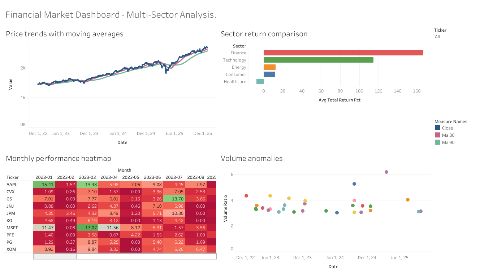

Goal: Analyse stock performance across 5 sectors using 3 years of daily market data to identify price trends, sector returns, seasonal patterns, and volume anomalies.
Python SQL (SQLite) Tableau PublicThe dashboard includes four views: price trends with moving averages, sector return comparison, monthly performance heatmap, and volume anomaly detection.

➡️ View live dashboard on Tableau Public
These queries demonstrate window functions, CTEs, and conditional aggregation applied to real financial data to generate actionable insights.
Calculates 30-day and 90-day moving averages to identify price trends and momentum shifts.
SELECT
ticker, sector, date, close,
AVG(close) OVER (
PARTITION BY ticker
ORDER BY date
ROWS BETWEEN 29 PRECEDING AND CURRENT ROW
) AS ma_30,
AVG(close) OVER (
PARTITION BY ticker
ORDER BY date
ROWS BETWEEN 89 PRECEDING AND CURRENT ROW
) AS ma_90
FROM stock_prices
ORDER BY ticker, dateIdentifies trading days where volume exceeded 2x the 20-day average, flagging unusual market activity.
WITH vol_avg AS (
SELECT
ticker, date, volume, close,
AVG(volume) OVER (
PARTITION BY ticker
ORDER BY date
ROWS BETWEEN 19 PRECEDING AND CURRENT ROW
) AS avg_volume_20d
FROM stock_prices
)
SELECT
ticker, date, volume,
CAST(avg_volume_20d AS INTEGER) AS avg_volume_20d,
ROUND(CAST(volume AS REAL) / avg_volume_20d, 2) AS volume_ratio
FROM vol_avg
WHERE volume > avg_volume_20d * 2
ORDER BY volume_ratio DESC